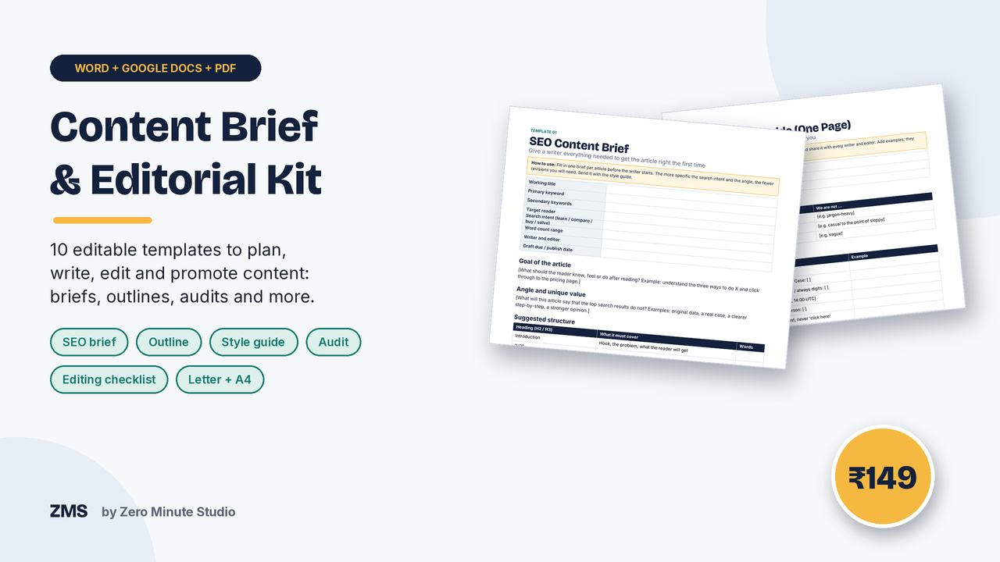
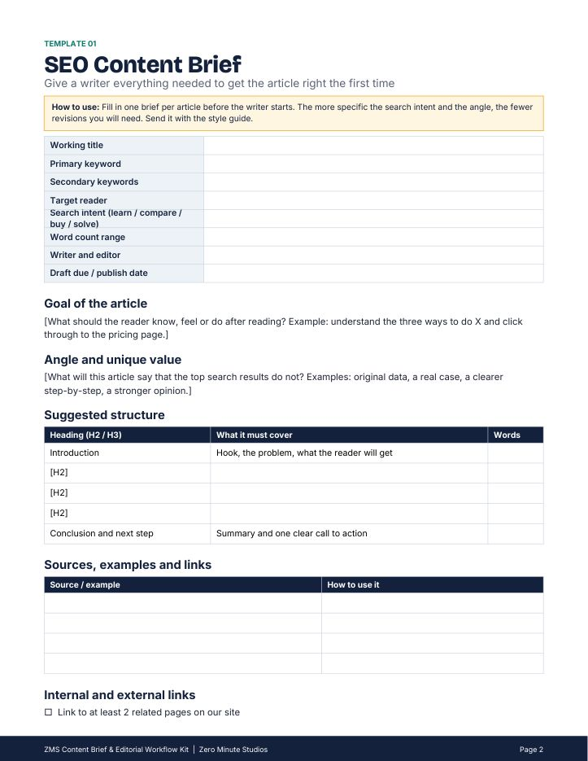
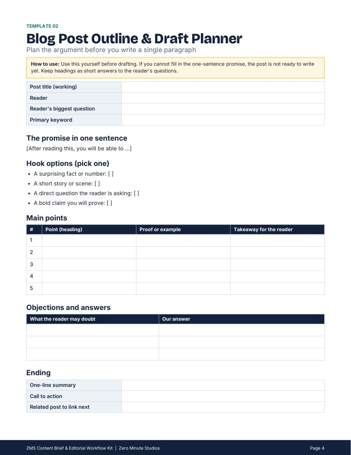
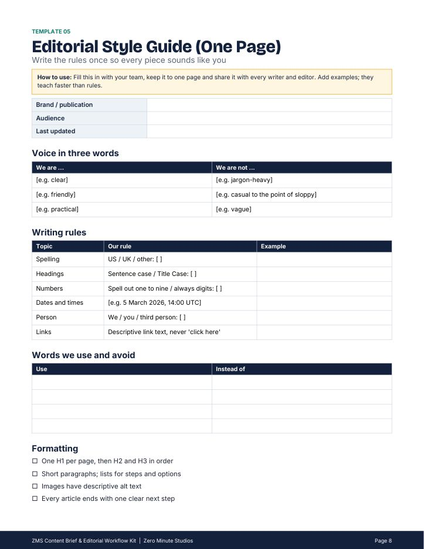
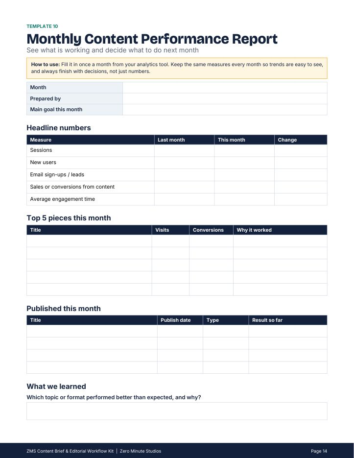

Content Brief & Editorial Workflow Kit

Stop starting articles from a blank page. Ten ready-to-edit templates take content from idea to published page and into next month's plan, so writers know exactly what to deliver and editors know exactly what to check. Replace the bracketed text and use.
- SEO Content Brief
- Blog Post Outline & Draft Planner
- Keyword Research & Search Intent Sheet
- Content Audit Sheet
- Editorial Style Guide (one page)
- Freelance Writer Guidelines & Onboarding
- Editing & Fact-Check Checklist
- Content Request Form
- Publish & Promote Checklist
- Monthly Content Performance Report
Editable Word files that also open in Google Docs. US Letter and A4 versions of every template, plus an 15-page print-ready PDF preview.
Preview




FAQ
What format are the files? Editable Word (.docx), which also open in Google Docs, in US Letter and A4, plus a PDF preview.
Who is it for? Writers, content marketers, editors, founders and agencies.
How do I get it? Instantly after payment. For your own business use; please don't resell the files.
We don't do refund & return ✌️